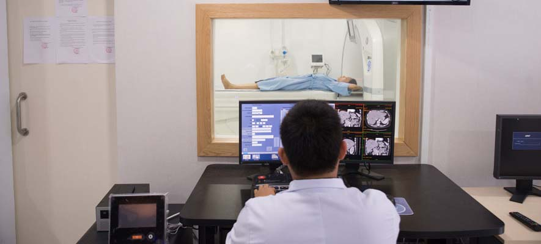
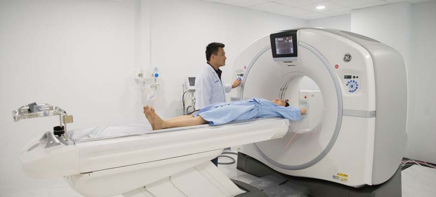
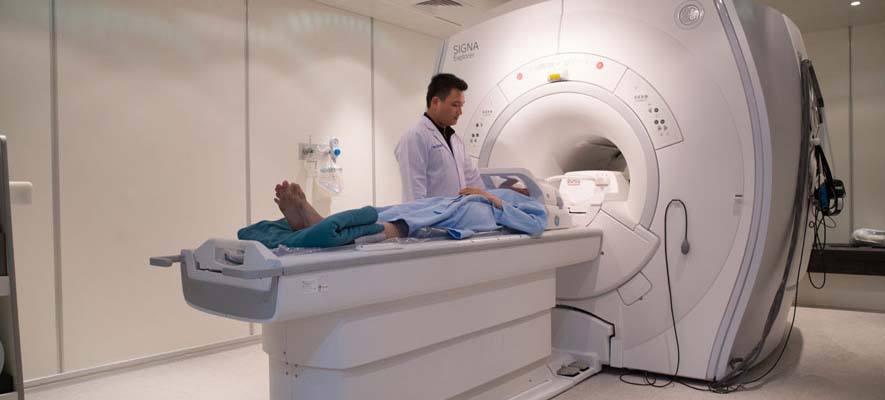

Centres
-
Diagnostic Centre
cambridge hospital Diagnostics Centre is a multi-specialty Polyclinic, Medical & Diagnostic Center. It is one of its kinds in western suburbs having multi services & Consultations & Full Body Check-ups under one roof. At Holy Spirit Hospital , we are committed to provide best of the best treatments in a comprehensive and seamless way. From medical excellence to a warm, reassuring environment, everything we do is governed by one overriding objective - the welfare of our patients. At cambridge hospital , we are committed to provide best of the best treatments in a comprehensive and seamless way From medical excellence to a warm, reassuring environment, everything we do is governed by one overriding objective - the welfare of our patients
cambridge hospital Diagnostic Center is designed with emphasis on excellence in clinical services and diagnostic facilities. As a truly world-class institution, cambridge hospital Diagnostic Center offers doctors and patients cutting edge diagnostic solutions as well as the latest in IT systems.
-
Heart Centre
Our expert cardiologists, technicians and others will work together to understand your condition, how to treat it and how to keep you healthy and active.
Expert care in the heart of your community
You don't have to go into Boston to get top quality heart care. CHA has a reputation for excellence in Cardiology. In fact, 3 of the 4 cardiologists at CHA were named 2019 Top Doctors by Boston Magazine.
Our cardiology program is bigger than it looks.
Thanks to our partnership with Beth Israel Deaconess Medical Center (BIDMC) in Boston, CHA can offer heart care and services for even the most complex needs. Your CHA cardiologist can coordinate and oversee your treatment, even if you have a procedure at another hospital.
-
Cancer Centre
When you find out you have cancer, your world changes quickly. At CHA, our world is focused on you.
CHA has a caring, expert team to help you understand your cancer and support your treatment. This includes doctors who trained at some of the finest hospitals as well as nurses, social workers and others who will be at your side throughout your cancer journey.
Recognized for Cancer Care
The American College of Surgeons recognizes CHA as a Community Hospital Cancer Program for its high-quality care.
CHA collaborates with the American Cancer Society on a number of key initiatives.
CHA is proud to be supported by the Avon Foundation to improve the breast health of women.
A Big Picture Approach
It takes a team to meet patient needs. At CHA, your entire care team—primary care, social work, surgeons, oncologists and others—works together. Having everyone on the same page gives you better care.
As a CHA patient, you have access to surgery, chemotherapy and other services in our friendly neighborhood locations. We can also connect you to our partner hospitals for highly complex or specialized care. Our goal is to get you the right treatment for your cancer, based on your specific needs.
Some patients may benefit from molecularly targeted therapies, hormone therapy or immunotherapy. Others need radiation or a specific procedure or protocol. Regardless of where your treatment occurs, your CHA primary care provider and oncologist will still be part of your core care team - with you every step of the way.
-
Community Health Centre
The essence of CHA is community. Our purpose is to improve everyone's health and that begins with relationships with people like you who live and work in the communities where we provide care. CHA's health services are integrated into the community through primary care, specialty care, programs and partnerships..
Community Health at its Best
Our community health efforts are integral to improving health through the lens of justice and health equity. They…
Provide clinical care in your neighborhood
Work with the community to understand overall health status
Build knowledge in the community through collecting and sharing data
Serve as the community wheelhouse, connecting and convening resources
Take action by initiating programs based on identified health needs and community engagement
Complete academic research with physicians, the community and interns
Create an environment where individuals can support their community health needs